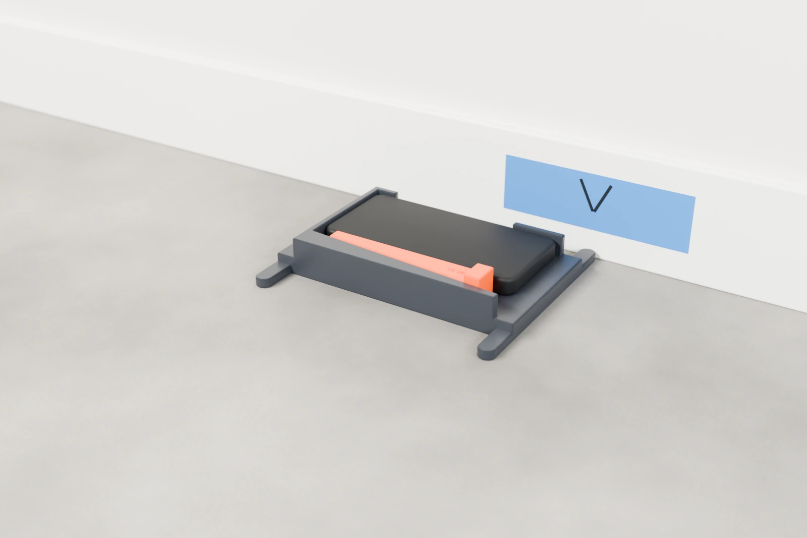

Help topics
Bracket Calibration
This calibration measures how your phone sits in your bracket. It takes a few minutes at a wall, and is saved. When to run it
Set up the mark
You need a hard, flat surface, a flat vertical surface beside it, and a strip of tape. A hard floor against a wall or a bookshelf will work.
- Tape the wall; draw a V on it. Put the tape on the wall about 1 inch (25 mm) above the floor and draw a V on it, pointing down: that is your mark. Face it.
- Learn the rule. Every reading is taken with the bracket’s prongs pressed against the wall just below the tape, with one prong right under the V: lying flat, the right-hand prong; standing upright, the bottom one. Left and right are yours, facing the tape. The prongs must never touch the tape: it would throw the readings off.

The steps
Open Settings → Bracket Calibration, tick The phone is secured in the bracket. and tap Start. The screen says Hands Off when the bracket lies flat and Hold Still when it stands upright. Each reading ends with a buzz.
- Lie still for about a minute. Lay the bracket flat on the floor, screen up, and leave it until the screen asks for the next step. This grades the phone.
- Flat turns at the wall. With FRONT pointing left and the screen up, slide the bracket until its prongs press against the wall just below the tape, the right prong under the V. Let go until it buzzes. Then turn it end for end the way the arrow on the screen shows, slide it back, and let go again. The screen asks for several turns, both ways.
- Upright turns at the wall. Stand the bracket on its end against the wall, FRONT up, screen facing right, the bottom prong under the V, and hold it still until it buzzes. Then spin it in place so FRONT points down, screen still facing right. Then flip it over so the screen faces left. The screen asks for one more spin and one more flip, and sometimes for one hold again.
- Calibration walks. Lay the bracket flat on the mark, FRONT left, and leave it until it buzzes. Pick it up and walk around the house, carrying it as you would between wheels, until it buzzes (a minute at most). Go back, lay it flat on the mark, and let go until it buzzes. There are two walks, sometimes three.
If you drop or knock the bracket during a walk, the walk is cancelled: put it back on the mark and walk again. Lying flat, the bracket may slope up to 5°; it doesn’t need a perfectly level floor.
The result
A good calibration saves itself: Done and saved. It tells you how the phone sits in the bracket, for example Phone in the bracket: 0.29° nose down, 0.28° to the side. Readings are corrected for it. or Phone in the bracket: sitting square.
One that isn’t good says why and is not used: Done, but it cannot be saved. followed by the reason. Fix what it says and run it again. The common ones are in Troubleshooting.
When to run it
- Before your first measurement.
- With a new phone or a new bracket, or after the bracket is dropped, damaged or reprinted.
- Every 30 days. When you tap Start on a lap and your calibration is 30 days old or more, the app shows Time to calibrate the bracket. Calibrate now opens it; Not now carries on with the lap and reminds you again in 30 days.
What calibration measures
- The angle between the bracket’s two edges. Left wheels are read on one edge and right wheels on the other, so this goes straight into total toe if it isn’t measured.
- How the phone sits in the bracket: its tilt, for example “0.29° nose down, 0.28° to the side”. Readings are corrected for it.
- The camber zero. Without it, camber is only relative.
- A grade for your phone’s gyroscope: Good, Marginal or Not suitable. A weaker grade lowers the confidence of your results.
- How much carrying the phone costs in drift, which sets how much drift a lap will accept.
Settings → About shows your calibration: the bracket, the date, the edge angle, the phone grade and the walk drift.